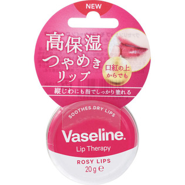

返回列表
产品名称：ヴァセリン リップ モイストシャイン ローズピンク

ユニリーバ・ジャパン ヴァセリン リップ モイストシャイン ローズピンク ２０Ｇ
メーカー ユニリーバ・ジャパン
JANコード 4902111752983
商品の特徴
唇のうるおいをしっかり守る高い保湿力です。
口紅の上からも塗れて、うるおった艶やかな唇に。
やわらかで伸びやすい処方なので、気になる縦じわにも指でしっかり塗ってケアできます。
ほんのりローズピンクの唇に。
成分・分量
【成分】
ワセリン、ダマスクバラ花油、アーモンド油、酸化チタン、硫酸Ｎａ、塩化Ｎａ、香料、赤２２６
用法及び用量
【使用方法】
適量を手に取り唇にぬってください。